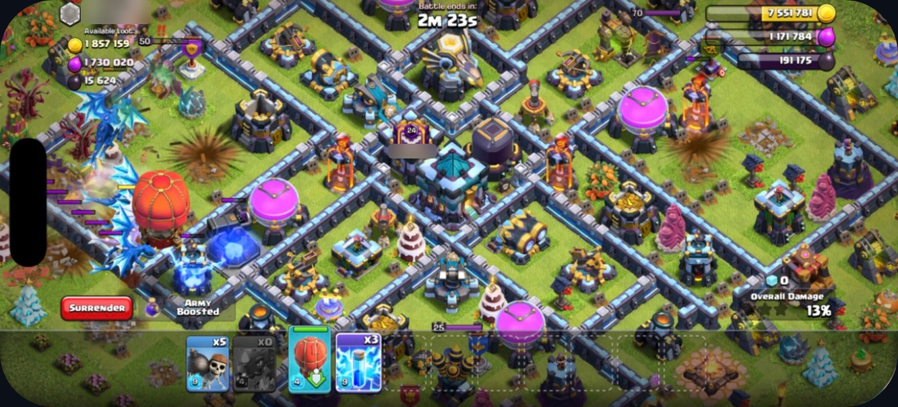

Claude
· 13:45 · first real run · via iPhone Mirroring
"Attack in progress on a 2M gold / 2.1M elixir base — deploying the last dragons, siege machine and lightning spells."
github.com/arhxam/coc-agent
coc-agent · Claude Code computer use